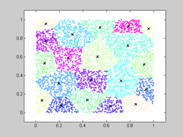

clear all;
close all;
clear functions;
clc;
disp('---------------------------------------------');
disp(sprintf('Example to demonstrate the use of KcenterClustering'));
disp('---------------------------------------------');
d=2;
disp(sprintf('Dimensionality d=%d\n',d));
N=5000;
disp(sprintf('Number of source points N=%d\n',N));
X=rand(d,N);
K=20;
disp(sprintf('Number of clusters K=%d\n',K));
disp('---------------------------------------------');
disp(sprintf('Running the k-center clustering\n'));
disp('---------------------------------------------');
to=clock;
[rx,ClusterIndex,ClusterCenter,NumPoints,ClusterRadii]=KCenterClustering(d,N,X,double(K));
clustering_time=etime(clock,to);
disp(sprintf('Maximum cluster radius=%f\n',rx));
disp(sprintf('Time taken=%f secs\n',clustering_time));
plot_clusters(N,d,X,K,ClusterIndex,ClusterCenter);
---------------------------------------------
Example to demonstrate the use of KcenterClustering
---------------------------------------------
Dimensionality d=2
Number of source points N=5000
Number of clusters K=20
---------------------------------------------
Running the k-center clustering
---------------------------------------------
Maximum cluster radius=0.217316
Time taken=0.015000 secs
